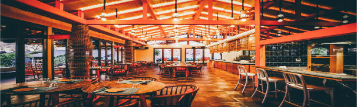

As a young boy Chef Yuki Haruto always dreamt of one day owning his very own restaurant in New York
city. Born and raised in the small town of Kyoto, Chef Yuki Haruto trained with master Chef Takahara
Shunichi. After many years of training, Chef Yuki Haruto finally obtained the title of “Ramen
Noodle Master”.
In 2005, at the ripe age of 19 Chef Haruto left Japan and started his journey headed for America.
After many months of working and saving, Chef Haruto was able to gain the capital needed to open The
Ramen Restaurant. Now 14 years later The Ramen Restaurant is one of the world’s premier dining
experiences.

The Ramen Restaurant
